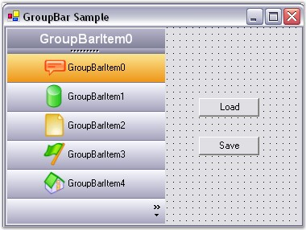
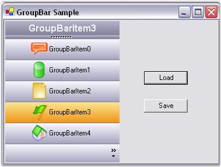

The Layout state of GroupBar can be saved and loaded using the AppStateSerializer class.
The following step-by-step procedure helps you to achieve the same.
1. Include the required namespaces.
|
[C#]
using Syncfusion.Windows.Forms; using Syncfusion.Windows.Forms.Tools; using Syncfusion.Runtime.Serialization; |
|
[VB.NET]
Imports Syncfusion.Windows.Forms Imports Syncfusion.Windows.Forms.Tools Imports Syncfusion.Runtime.Serialization |
2. Drag and drop a GroupBar control from the toolbox onto the form, add GroupBar Items using the GroupBar Item Collection Editor and add two buttons to the form for 'Load' and 'Save' as shown below.

Figure 889: Form with GroupBar Control, Load and Save Buttons
3. Store the layout information of the selected GroupBar Item in an XML file using the AppStateSerializer class. In the Form_Closing and Save_Button click, call the following method,
|
[C#]
private void SaveState () { // Create a temporary storage. ArrayList temp = new ArrayList(); foreach (GroupBarItem gbi in this.groupBar1.GroupBarItems) { // Store the index of each GroupBar Item in the Navigation Pane. if (gbi.InNavigationPane == true) temp.Add(this.groupBar1.GroupBarItems.IndexOf(gbi)); } // Store the index of the selected GroupBar Item. temp.Add(this.groupBar1.SelectedItem); // Persist this information to an XML file using the AppStateSerializer class. AppStateSerializer aser = new AppStateSerializer(SerializeMode.XMLFile, "..\\..\\StateInfo"); aser.SerializeObject("StackedModeState", temp); aser.PersistNow(); } |
|
[VB.NET]
Private Sub SaveState() ' Create a temporary storage. Dim temp As ArrayList = New ArrayList() For Each gbi As GroupBarItem In Me.groupBar1.GroupBarItems ' Store the index of each GroupBar Item in the Navigation Pane. If gbi.InNavigationPane = True Then temp.Add(Me.groupBar1.GroupBarItems.IndexOf(gbi)) End If Next gbi ' Store the index of the selected GroupBar Item. temp.Add(Me.groupBar1.SelectedItem) ' Persist this information to an XML file using the AppStateSerializer class. Dim aser As AppStateSerializer = New AppStateSerializer(SerializeMode.XMLFile, "..\..\StateInfo") aser.SerializeObject("StackedModeState", temp) aser.PersistNow() End Sub |
4. Retrieve the persisted layout information from the XML file using the AppStateSerializer class. In the Form_Load event and Load_Button click, call the following method,
|
[C#]
private void LoadState () { // De-Persist this information from the XML file using the AppStateSerializer class. AppStateSerializer aser = new AppStateSerializer(SerializeMode.XMLFile, "..\\..\\StateInfo"); ArrayList temp = aser.DeserializeObject("StackedModeState") as ArrayList; // Reset the InNavigationPane for all GroupBar Items. foreach (GroupBarItem gbi in this.groupBar1.GroupBarItems) { gbi.InNavigationPane = false; } // Restore the saved state by setting the appropriate InNavigationPane entries. int index; for(int i=0; i<temp.Count-1; i++) { index = (int)temp[i]; this.groupBar1.GroupBarItems[index].InNavigationPane = true; } // Restore the selected GroupBar Item. this.groupBar1.SelectedItem = (int)temp[temp.Count-1]; } |
|
[VB.NET]
Private Sub LoadState() ' De-Persist this information from the XML file using the AppStateSerializer class. Dim aser As AppStateSerializer = New AppStateSerializer(SerializeMode.XMLFile, "..\..\StateInfo") Dim temp As ArrayList = CType(IIf(TypeOf aser.DeserializeObject("StackedModeState") Is ArrayList, aser.DeserializeObject("StackedModeState"), Nothing), ArrayList) ' Reset the InNavigationPane for all GroupBar Items. For Each gbi As GroupBarItem In Me.groupBar1.GroupBarItems gbi.InNavigationPane = False Next gbi ' Restore the saved state by setting the appropriate InNavigationPane entries. Dim index As Integer Dim i As Integer = 0 Do While i < temp.Count - 1 index = CInt(temp(i)) Me.groupBar1.GroupBarItems(index).InNavigationPane = True i += 1 Loop ' Restore the selected GroupBar Item. Me.groupBar1.SelectedItem = CInt(temp(temp.Count - 1)) End Sub |
Output
At run-time, select any GroupBar Item and save it's state using the Save_Button click and close the form.
Select GroupBarItem3 and close the form.
Again open the same application. You can see the persisted layout state of GroupBarItem3 as shown in the following figure.

Figure 890: Illustrates Persisted State of GroupBarItem3